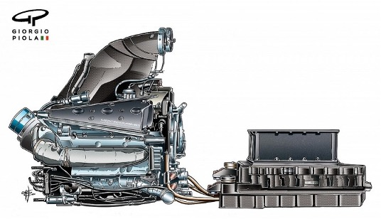

This paper is an insight into the factors causing Mercedes-AMG Petronas Formula One team to be so dominant, or if the other teams were just not as good. Looking at how Mercedes use race strategy and events happening within the race and react accordingly to give them the best chances of winning the race. While also having an experienced pit crew decreasing the risk for errors and being efficient during pit stops. Also, how big of an affect drivers make to winning a race and if this is what allowed Mercedes to be so dominant. Did a consistent driver line up build team chemistry between them and the rest of the team. Was the build of the car the reason behind Mercedes’ success, ranging from they’re impressive powertrain to their cleverly constructed aerodynamics. Or was it a combination of all three that cause Mercedes’ to be so dominant between 2014-2020.
Introduction
During 2014 up to 2020 Mercedes-AMG Petronas Formula One team took Formula One by storm. This is due to multiple factors, but which one did they get so right that separates them from their rivals. Is it race strategy, fast drivers or build of the car.
Analysis and discussion
Section I: Strategy
Starting with race strategy, this can be decomposed into three subcategories. Pit stops, driving strategy and response to race events. Pit stops are a crucial aspect of any motorsport racing as it needs to be quick and efficient because the longer you are in there the more time you lose on track. That’s why all teams should have a well-trained pit crew equipped for all circumstances. It should take a maximum 2.6 seconds for every team to change four tires for a quick stop, any longer and the team loses vital time. With Mclaren racing and Lando Norris holding the fastest ever pitstop recorded at 1.80 seconds (Formula 1 - Fastest pitstop, 2023). Also, the pit team have to be able to adapt well to quick strategy calls or when the driver makes an error and damages their car and a front wing replacement is required. Driving strategy is also important in motorsport racing, planning when to go into the pits and what tyre compound to use. Even knowing when to use the cars battery to provide the option to overtake and the conservation of tyre grip. Mercedes have always been very good at strategic calls coming back and winning races that seemed to have been lost. The last category of race strategy is a team’s response to race events. During a race the team have to adapt as anything can happen for example dramatic weather changes, when competitors go into the pits to attempt the undercut and when an accident occurs causing a safety car or a complete race restart. Planning when to change tyres due to weather changes for example from dry to heavy rain is crucial as you drivers either lose or gain positions as there is a drastic difference in lap time between dry and wet weather tyres. Another response required for the team and drivers is when a team attempts the undercut. An undercut is when a team’s driver is close behind their opposition and they pit a lap earlier than the driver in front of them. As the driver ahead is on old tyres they have less grip so are slower and as the new driver is on fresh tyres which will have more grip giving them more pace allowing them to undercut the driver that is ahead and now pitting (Autosport, 2023). The last response is the most important as it is responding to crashes and safety cars which is where the pace of the cars slow down allowing teams to pit to save losing track position.
Section II: Drivers
With a stable and impressive driver line up, Mercedes could consistently win races and go on to win 7 back to back constructor championships. Starting at 2014 the Mercedes pairing involved two experienced drivers, Nico Rosberg and Lewis Hamilton. With Hamilton winning and becoming a 2 time world champion and winning it again in 2015 (F1 2014 Driver Standings, 2014). In 2017 Mercedes introduce a new driver after Nico Rosberg’s announced his retirement. Valtteri Bottas stepped in as Mercedes number 2 driver and this pairing stuck together for the remaining period of Mercedes’ dominance (F1 2017 Driver Standings, 2017). Mercedes’ star driver Lewis Hamilton won 6 out of his 7 driver’s championships and 4 out of 20 tracks he has set the fastest lap ever recorded with Mercedes Formula 1 - Fastet lap (2023), and has gone on to be one of the greatest of all time, so did Mercedes have the best drivers or were other teams not equipped with a strong set of drivers that could not match with Mercedes.
Section III: Build of the car
The build of the car can be split between the power unit, aerodynamics and the chassis. Mercedes had the best engine, this is because in the summer of 2011 Formula One announced new regulations that would change the engine to a v6 turbo hybrid engine from the 2014 season. Mercedes took advantage of this announcement and got to building an engine that would stand out from all the other competitors. With an experienced team of engineers due to making engines for Mclaren for the last two decades, Mercedes built an engine focused on maximum performance. They used a split turbo engine design splitting the compressor and the exhaust into separate parts improving it immensely (Onestopracing, 2021).
Figure 1: Mercedes split turbo engine The question is was the split turbo engine so good or did Mercedes’ competitors just get it wrong. Looking at the years of dominance Mercedes had, it is safe to say that Mercedes got it right and that the competitors had no chance to compete against the power of the car Mercedes had constructed. Looking at the aerodynamics aspects that Mercedes used during 2014-2020 the team used neat tricks for better airflow management. At the front of the car the team used a conjoined lower wishbone, which narrows the gap between the two legs in order to turn it into one larger aerodynamic fairing, keeping the airflow coming off the front wing correctly improving the performance of the downstream. While also moving the steering arm inline with the upper wishbone for better airflow. The rear of the car was just as impressive, the rear wing no matter the configuration had a twin mounting pillar arrangement, creating stability instead of the beam wing that had been removed due to the new regulations (Autosport, 2021).
Conclusion:
In conclusion, I think Mercedes were very dominant during 2014-2020 and not because the other teams all performed badly. I believe it was a combination of Mercedes building a very fast car and having a strong set of drivers with very good strategy calls causing them to win all constructor’s championships during this period.